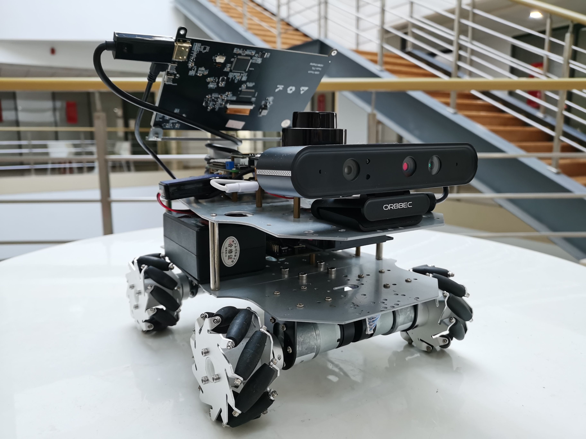
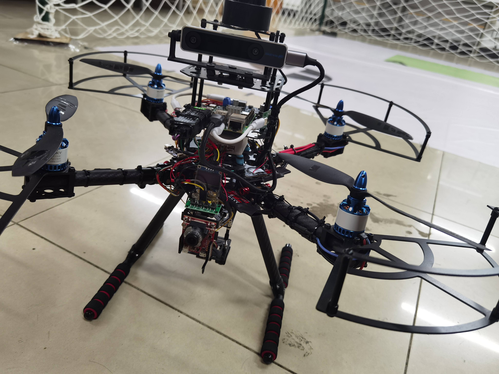

项目简介
针对黄酒产线人工检测效率和稳定性不足的问题，开发视觉缺陷检测与剔除系统。
Project 01 · 企业项目 · 2024.10—2025.12
上海石库门酿酒有限公司
针对黄酒产线人工检测效率和稳定性不足的问题，开发视觉缺陷检测与剔除系统。
独立完成图像采集与缺陷标注；针对 4 类缺陷分别使用 VisionTrain 训练目标检测模型，在 VisionMaster 中搭建针对 7 类缺陷的检测流程；完成 PLC 剔除控制与 HMI 监控。
系统在额定速度约 300 瓶/分钟的产线上与人工检测并行试运行 5 天，覆盖约 30 万瓶；仅有少量误剔，人工后检未发现明显漏检。相关发明专利申请 1 项，已进入实质审查阶段，本人为发明人。
Project 02 · 竞赛项目 · 2025.03—2025.07
第二十届中国研究生电子设计竞赛
上海赛区三等奖

开发由轮式底盘和机械臂组成的移动操作机器人，实现自主导航、6 类医疗物品识别与跟踪，并移动至机械臂可抓取位置。
负责 ROS2 自主导航、YOLOv12 模型训练与 TensorRT 部署、KCF 目标跟踪及底盘控制；模型在 Jetson Orin Nano 4GB 上的实机推理帧率由约 9 FPS 提升至约 20 FPS。
与队友开发的机械臂模块完成联调，实现“导航—目标跟踪—抓取—导航至终点”的实机演示。
Project 03 · 竞赛项目 · 2023.04—2023.08
2023 年全国大学生电子设计竞赛
江苏省一等奖

面向空地协同消防比赛任务，实现四旋翼无人机自主巡航和灭火包投放。
负责 T265 定位数据传输、任务状态机和位置外环控制；通过 ROS 获取 T265 位姿与速度，经 UART 发送至 STM32F4，并基于开源飞控完成二次开发。
无人机按照预设航点全自动完成起飞、巡航、灭火包投放和降落。